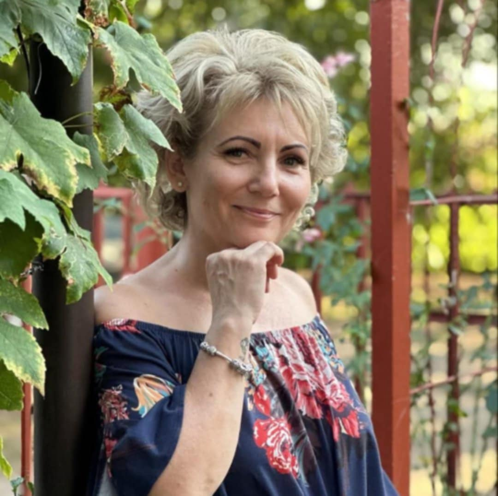

A Kézműves Minőség Titka
Pálóczi Katalin vagyok, a PK alapítója. Szenvedélyem, hogy olyan táskákat készítsek, melyek nem csak szépek, de a mindennapokban is tökéletesen funkcionálnak. Ismerd meg a folyamatot!
A Készítés Folyamata
Tervezés és Inspiráció
Minden táska egy minimalista, letisztult vízióval indul, melyet a pasztell színek és a praktikum iránti szeretet inspirál.
Kézi Szabás és Varrás
Minden egyes darab kézzel kerül szabásra és varrásra, így a tömeggyártástól eltérő, egyedi minőséget kapsz.
Kiváló Minőségű Alapanyagok
- Bőr / bőrhatású anyagok a tartósságért és elegáns textúráért.
- Erős, könnyen tisztítható bélés, amely harmonizál a pasztell dizájnnal.
- Megbízható cipzárak, karabinerek és csatok a modern megjelenésért.
Idő és Érték
Minden PK táska kézzel, egyedi odafigyeléssel készül, nem gyáripari tömegtermék. Így lesz a táska egyszerre tartós és személyes.
Vásárlás és kollekció megtekintésePK Garancia
A PK garancia a kézműves minőség ígérete. Ha probléma adódna a varrással vagy az anyaggal, segítünk a javításban.
